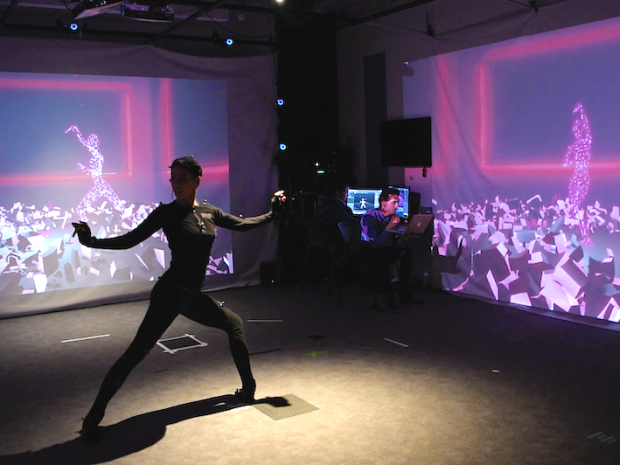

The Integrated Digital Media (IDM) Program is a place that fosters creative practice, design research and multidisciplinary experimentation with emerging media technologies. Our Bachelor of Science program centers around the IDM core, a suite of courses that focus on the four areas of Image, Sound, Narrative, and Interactivity. These courses are combined with upper-level electives ranging from user experience design to augmented reality to motion capture, as well as courses from the Tandon Engineering core, media studies courses taken in the department of Media, Culture, and Communication (MCC), and additional courses in math, science, humanities, and social sciences.
